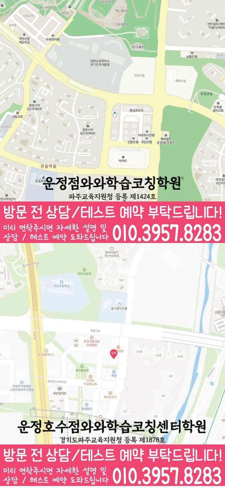

High school Korean · English · Math
동패동 고등학생 국영수학원
경기 파주시 동패동 고등학생 국영수학원 선택 전 국어·영어·수학 진단, 고등 내신 자료, 과목별 오답 관리와 센터 상담 확인 항목을 정리했습니다.
01 Quick answer
동패동에서 먼저 확인할 내용
동패동에서 고등학생 국영수학원을 찾는다면 와와학습코칭센터 운정점의 과목별 가능 학년을 먼저 확인하세요. 학생이 사용하는 학교 자료와 현재 교재를 직접 확인하고, 국어는 감으로 풀려고 하지만 문제 풀이 속도에만 신경 쓰는 편이고, 방학 계획이 개학 후 이어지지 않는 경향이 있어 학교별 수행평가와 지필 대비를 나눠야 하는 고등학생에게 맞게 현재 자료에서 확인한 문제를 수업, 복습과 재점검으로 연결하는지 살펴봐야 합니다.
대표 학생 상황
국어는 감으로 풀려고 하지만 문제 풀이 속도에만 신경 쓰는 편이고, 방학 계획이 개학 후 이어지지 않는 경향이 있어 학교별 수행평가와 지필 대비를 나눠야 하는 고등학생


010-6839-8283010-6839-8283원고 핵심 답변
경기 파주시 동패동의 고등학생에게 필요한 국영수 수업은 선행 여부 하나로 결정되지 않습니다. 이 페이지는 국어는 감으로 풀려고 하지만 문제 풀이 속도에만 신경 쓰는 편이고, 방학 계획이 개학 후 이어지지 않는 경향이 있어 학교별 수행평가와 지필 대비를 나눠야 하는 고등학생을 대표 사례로 삼아, 동패동에서 국어·영어·수학을 어떻게 나누어 점검하면 좋은지 답변합니다. 또한 제공된 학교 정보와 주소, 그리고 학습격려처럼 학부모님이 실제로 묻는 운영 요소를 함께 살펴 상담 전에 확인할 질문을 정리합니다.
동패동 고등학생 국영수학원 선택 전에 바로 확인할 기준
학부모 상담에서 자주 나오는 걱정은 “동패동 고등학생 국영수학원에서 우리 아이가 세 과목을 모두 따라갈 수 있을까”라는 점입니다. 경기 파주시 동패동 기준으로는 국어·영어·수학을 한꺼번에 늘리는 계획보다, 국어는 감으로 풀려고 하지만 문제 풀이 속도에만 신경 쓰는 편이고, 방학 계획이 개학 후 이어지지 않는 경향이 있어 학교별 수행평가와 지필 대비를 나눠야 하는 고등학생인지 먼저 확인하는 과정이 더 중요합니다. 동패동에서 고등학생 국영수학원을 고를 때 상담표에 현재 단원, 틀린 유형, 과제 지속 시간이 같이 적히면 수업 방향을 더 현실적으로 세울 수 있습니다. 동패동 고등학생 국영수학원의 좋은 출발점은 학생에게 많은 약속을 주는 것이 아니라 오늘부터 바꿀 한두 가지 학습 행동을 정하는 데 있습니다.
동패동 고등학생 국영수학원 시험 범위 관리 방법
고등 국어·영어·수학 관리 기준의 내신 대비는 시험 기간에만 갑자기 시작되는 과정이 아닙니다. 동패동에서 국어는 감으로 풀려고 하지만 문제 풀이 속도에만 신경 쓰는 편이고, 방학 계획이 개학 후 이어지지 않는 경향이 있어 학교별 수행평가와 지필 대비를 나눠야 하는 고등학생에게는 고등학생 내신은 하루 집중보다 누적 관리가 더 큰 영향을 주므로, 평소 과제와 시험 대비를 분리하지 않는 편이 좋습니다. 경기 파주시 동패동 고등학생이 국어·영어·수학을 함께 관리하려면 시험 3주 전에는 범위표를 단원별 과제로 바꾸고, 시험 2주 전에는 틀린 문항을 유형별로 묶어야 합니다. 이 지역의 고등학생 학습 과정 시험 후에는 기말 기간에는 과목별로 남은 범위를 시각화하고, 국어·영어·수학의 우선순위를 하루 단위로 조정해야 합니다.
동패동 등원부터 피드백까지 운영 기준
동패동 학부모님이 학습격려를 찾는 이유는 단순한 수업보다 학생의 공부 방식이 바뀌기를 기대하기 때문입니다. 동패동 고등학생의 국어·영어·수학 학습 점검에서는 계획표 작성만으로 끝내지 않고 국어·영어·수학 과제 수행, 오답 반복, 복습 주기를 함께 확인해야 합니다. 경기 파주시 동패동 고등학생에게 학습 관리는 부모님의 잔소리를 늘리는 방식보다 학생이 자신의 약점을 말로 설명할 수 있게 돕는 방향이 필요합니다.
동패동 고등학교 자료를 수업 계획에 반영하는 방법
동패동 페이지에 제공된 고등학교 목록은 없습니다. 확인되지 않은 학교명을 임의로 추가하지 않으며, 상담 시 학생이 실제로 사용하는 시험 범위표·학교 프린트·수행평가 일정 자료를 기준으로 확인해야 합니다.
동패동 학생의 학교 자료를 준비할 때는 국어 읽기와 문법 범위, 영어 어휘와 문장 적용, 수학 단원과 풀이 과정을 과목별로 나누면 현재 우선순위를 더 분명하게 정리할 수 있습니다.
경기 파주시 동패동 고등학생 국영수 과목별 접근
동패동 국어·영어·수학 학습 계획이 고등학생 국영수학원이라는 이름으로 검색되더라도 세 과목을 같은 방식으로 가르친다는 뜻은 아닙니다. 동패동 고등학생의 국어 수업은 지문을 오래 읽는 훈련보다 먼저 문제의 근거가 어느 문장에 있는지 표시하게 합니다. 경기 파주시 동패동에서 영어가 흔들리는 학생은 문법을 독해 속에 넣어 점검하면 시험장에서 헷갈리는 유형을 줄이는 데 도움이 됩니다. 고등 국어·영어·수학 관리 기준 상담에서 수학 계획을 세울 때는 공식 암기 다음에는 조건 해석, 식 세우기, 계산 검산을 분리해 봅니다. 그리고 풀이가 길어질수록 어느 단계에서 흔들리는지 기록해야 보충 수업의 방향이 분명해집니다. 동패동 학부모님은 국어·영어·수학을 모두 맡긴다는 표현보다 과목별 피드백이 서로 충돌하지 않는지 확인해야 합니다. 경기 파주시 동패동 고등학생에게는 한 과목의 과제량이 다른 과목 복습을 밀어내지 않도록 주간 균형을 조정하는 과정이 필요합니다.
경기 파주시 동패동 학부모를 위한 방문 상담 체크리스트
동패동 국어·영어·수학 학습 계획 상담 준비에서는 다음 기준을 적용합니다: 학부모님이 자주 묻는 비용이나 일정도 중요하지만, 학생에게 맞는 반 배정 기준을 먼저 확인해야 합니다. 동패동 학부모님이 학습격려를 함께 확인한다면 상담 질문은 “몇 점까지 오르나요”보다 “어떤 단원부터 다시 확인하나요”에 가까울수록 실질적인 답을 얻기 쉽습니다. 경기 파주시 동패동에서 방문 상담을 잡을 때는 주소 표기(경기 파주시 동패동 1758-1 삼융프라자2 302호)를 기준으로 학생의 실제 이동 가능 시간도 계산해 보아야 합니다. 고등 국어·영어·수학 관리 기준을 비교할 때 화려한 설명보다 중요한 기준은 다음과 같습니다: 학생이 싫어하는 과목을 무조건 늘리기보다, 부담을 견딜 수 있는 주간 학습량부터 정하는 것이 현실적입니다.
02 Consultation examples
동패동 학부모 상담 상황 예시
아래 내용은 실제 고객 후기나 성적 결과가 아니라, 상담에서 확인할 질문을 이해하기 위한 상황 예시입니다.
국어는 감으로 풀려고 하지만 문제 풀이 속도에만 신경 쓰는 편이고, 방학 계획이 개학 후 이어지지 않는 경향이 있어 학교별 수행평가와 지필 대비를 나눠야 하는 고등학생의 경우를 바탕으로 만든 상담 상황 예시입니다. 학생의 하루 시간표에 과목별 과제와 오답 재풀이를 실제로 배치해 보고 무리한 분량은 줄이는 방향으로 질문을 정리합니다.
동패동 기준 제공된 고등학교 목록이 없어 학생의 실제 시험 범위표·학교 프린트·수행평가 일정 자료를 직접 준비해 질문하는 경우입니다. 학부모는 교습비와 시간표뿐 아니라 과목별 진단 근거, 보완 순서와 일정 시간이 지난 뒤 재확인하는 방법까지 질문합니다.
03 FAQ
동패동 고등학생 국영수학원 자주 묻는 질문
학부모님이 상담 전에 자주 확인하는 내용을 질문과 답변으로 정리했습니다.
동패동 고등학생 국영수학원 상담 전에 먼저 점검할 학습 문제는 무엇인가요?
국어는 감으로 풀려고 하지만 문제 풀이 속도에만 신경 쓰는 편이고, 방학 계획이 개학 후 이어지지 않는 경향이 있어 학교별 수행평가와 지필 대비를 나눠야 하는 고등학생이라면 최근 국어·영어·수학 시험지와 교재를 함께 놓고 막힌 지점을 과목별로 나눠 보는 상담이 도움이 될 수 있습니다. 등록 여부는 실제 진단과 센터 운영 범위를 확인한 뒤 결정해야 합니다.
동패동에서 세 과목 계획을 한꺼번에 세워도 괜찮을까요?
동패동 상담에서는 세 과목을 같은 분량으로 나누기보다 최근 시험과 학교 일정, 반복 오답을 기준으로 우선순위를 정합니다. 과목별 완료 기준이 있어야 계획과 실제 실행의 차이를 확인할 수 있습니다.
동패동 고등학교 목록이 없는 경우 상담은 어떻게 준비하나요?
동패동에 제공된 고등학교 목록이 없어 임의로 학교명을 추가하지 않았습니다. 학생이 실제 사용하는 시험 범위표·학교 프린트·수행평가 일정 자료를 준비하고 희망 센터의 과목·학년 운영 범위를 직접 확인하는 것이 정확합니다.
동패동 고등학생 상담을 예약할 때 어떤 정보를 준비하면 좋나요?
제공 자료 기준 센터 주소는 경기 파주시 동패동 1758-1 삼융프라자2 302호입니다. 수업 가능 학년은 국어 고1·고2·고3, 영어 고1·고2·고3, 수학 고1·고2·고3로 정리되어 있습니다. 교습비 자료는 페이지의 센터별 교습비 확인 버튼에서 바로 확인할 수 있습니다. 실제 개설 과목·시간표·보강·차량·주차 운영은 변경되거나 제공 자료에 없을 수 있으므로 등록 전에 센터에서 다시 확인하세요.
04 Continue
동패동 페이지 이동
카테고리 전체 지역 또는 앞뒤 지역 안내로 이동할 수 있습니다.